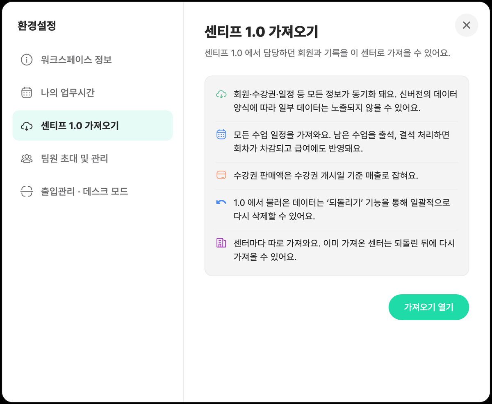
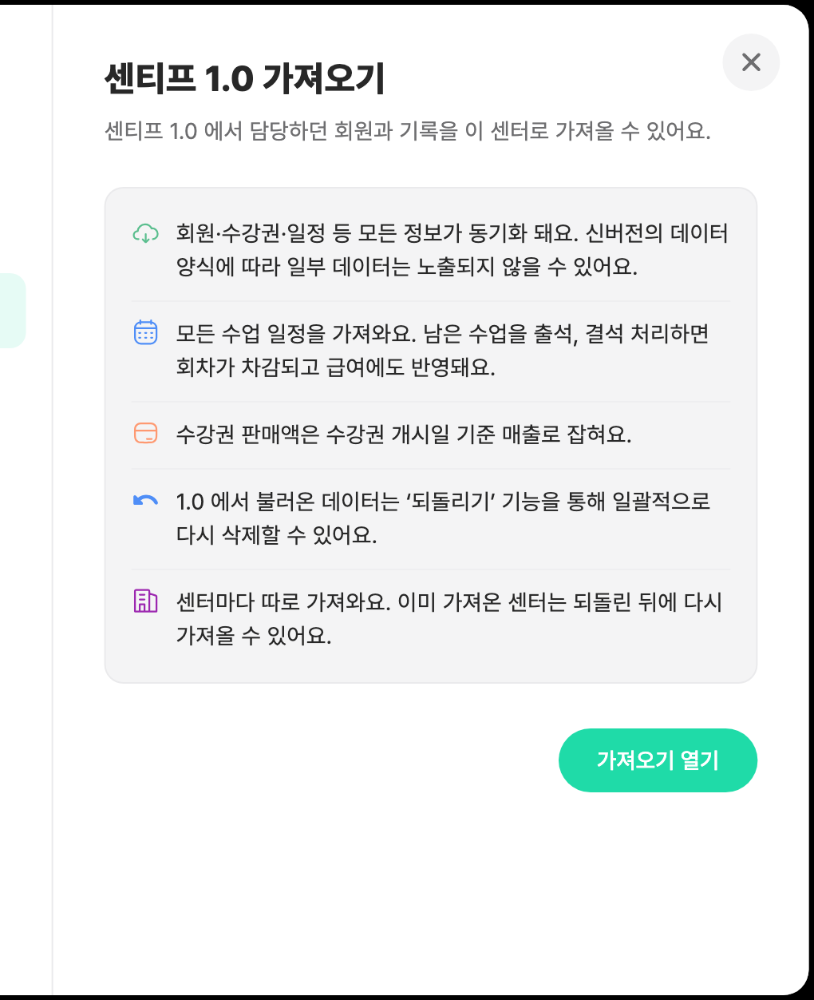
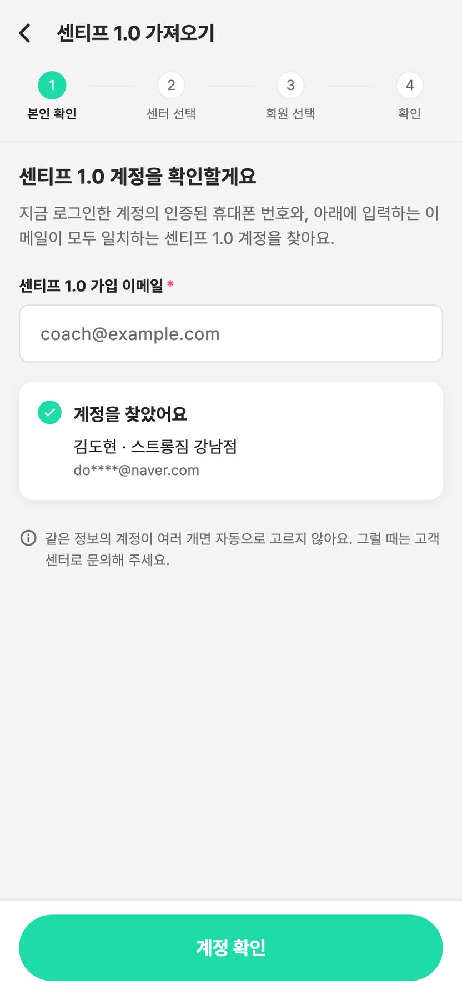
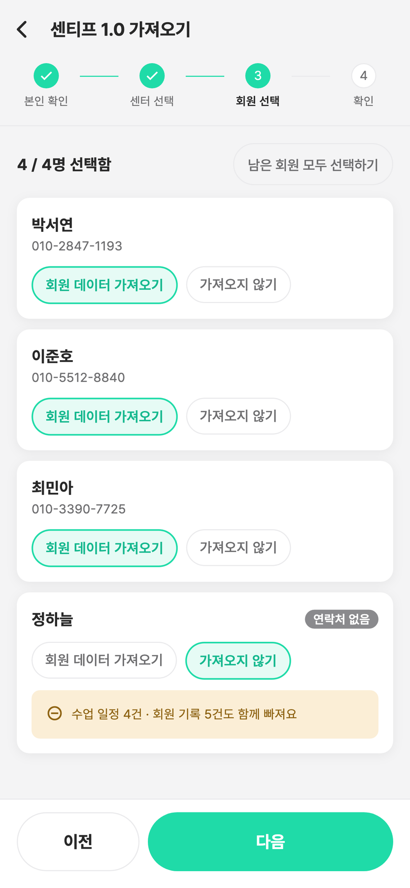
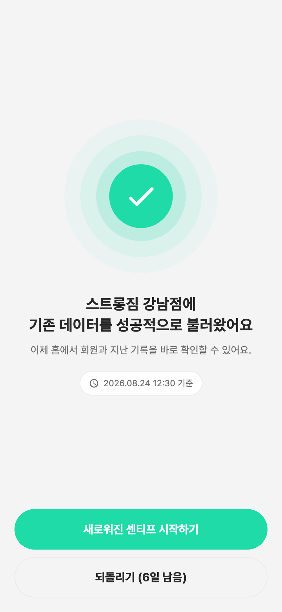

가져오기 방법
아래 화면은 기기에 따라 스마트폰 또는 태블릿 기준입니다. 화면 배치는 기기별로 다를 수 있으나 메뉴 이름과 버튼은 같습니다. 진입 방법이 다른 단계는 기기별로 표기했습니다.

센티프 2.0 회원가입
강사/관리자 앱을 설치하고 계정을 만듭니다. 태블릿과 스마트폰 어느 쪽이든 같습니다. 가입 과정에서 휴대폰 인증을 완료합니다.
센티프 1.0과 동일한 휴대폰 번호로 가입합니다. 번호가 다르면 본인 확인에 실패해 데이터를 가져올 수 없습니다.

워크스페이스 생성
가져온 데이터가 저장될 워크스페이스를 만듭니다.
- 워크스페이스 이름은 이후 변경할 수 있습니다.
- 이미 소속된 워크스페이스가 있으면 이 단계를 건너뜁니다.

워크스페이스 설정 열기
워크스페이스 전환 메뉴를 연 뒤 [워크스페이스 설정]을 누릅니다. 진입 방법은 기기에 따라 다릅니다.
- 태블릿(가로) — 좌측 사이드바 상단의 워크스페이스 로고를 누릅니다.
- 스마트폰(세로) — 좌측 상단 [≡] → 메뉴 맨 위의 워크스페이스 이름을 누릅니다.

[센티프 1.0 가져오기] 선택
설정 메뉴에서 [센티프 1.0 가져오기]를 선택합니다. 안내를 확인한 뒤 [가져오기 열기]를 누릅니다.
- 태블릿 — 왼쪽 메뉴를 고르면 오른쪽에 안내가 표시됩니다.
- 스마트폰 — 메뉴 목록에서 항목을 누르면 안내 화면으로 이동합니다.

본인 확인
센티프 1.0 가입 이메일을 입력하고 [계정 확인]을 누릅니다. 인증된 휴대폰 번호와 대조해 계정을 찾습니다.
계정을 찾지 못하면 센티프 1.0 앱에서 이메일과 휴대폰 번호를 다시 한번 확인해주세요. 계속 찾지 못하면 카카오톡 채널로 문의해주세요.

회원 선택
센티프 1.0의 회원 목록이 표시됩니다. 회원별로 [회원 데이터 가져오기] 또는 [가져오지 않기]를 선택합니다.
제외한 회원은 나중에 따로 추가할 수 없습니다. 가져오기는 워크스페이스마다 한 번이라, 다시 하시려면 전체를 되돌린 뒤 처음부터 진행해야 합니다.

가져오기 완료
완료 화면이 뜨면 끝입니다. 데이터 양에 따라 몇 분 정도 걸릴 수 있으며, 안전한 이전을 위해 끝날 때까지 앱을 켜주세요.
이제부터는 센티프 2.0에 기록해주세요. 가져오기를 시작한 시점까지의 데이터만 이전됩니다. 그 이후 1.0에 입력한 내용은 2.0으로 넘어오지 않습니다.
가져온 수업, 매출 등의 데이터는 2.0의 통계 데이터에 반영됩니다.